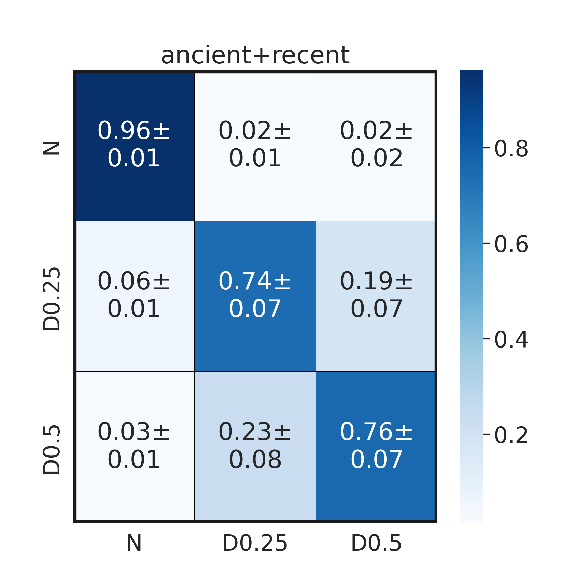

# pip install scikit-learn
# pip install chardet2. Session - Introduction to Deep Learning and Dataset Generation
A brief introduction to DL related to the field of Population Genetics is summarised by Korfmann et al. (2023).
The aim of this session is provide an intuition of what is it like to develop and apply neural networks using PyTorch, a popular deep learing framework.
2.0 DL/Machine Learning Paradigm
Machine learning (ML) and deep learning (DL) are two subfields of artificial intelligence (AI) that aim to enable computers to learn from data and improve their performance on a specific task without being explicitly programmed. The general paradigm of ML and DL involves the following steps:
Data collection: The first step is to gather the data that will be used to train the machine learning algorithm. This can involve collecting data from various sources, such as sensors, databases, or the internet.
Data preprocessing: The collected data needs to be cleaned, transformed, and prepared for the machine learning algorithm. This step includes tasks such as removing irrelevant or redundant data, handling missing values, and scaling the features.
Model selection: The next step is to select a machine learning model that is appropriate for the task at hand. There are many different types of machine learning models, such as linear regression, decision trees, and neural networks, and the choice depends on the specific problem.
Model training: In this step, the selected machine learning model is trained on the preprocessed data. The goal is to find the optimal parameters that minimize the error between the predicted outputs and the actual outputs.
Model evaluation: Once the machine learning model is trained, it needs to be evaluated to measure its performance on new, unseen data. This step helps to ensure that the model is not overfitting to the training data and can generalize well to new data.
Model application: Finally, the machine learning model can be deployed in a real-world environment where it can be used to make predictions or decisions.
Deep learning is a specific type of machine learning that uses neural networks with many layers to learn complex representations of the input data. The general paradigm of deep learning is similar to that of machine learning, but it typically involves larger datasets, more complex models, and longer training times. Deep learning models often require specialized hardware, such as graphics processing units (GPUs), to train efficiently.
2.1 Deep learning models
There are several types of deep learning models that are used for different tasks and on different types of data. The basic building block of most deep learning models is the neural network, which consists of layers of interconnected nodes (neurons) that perform mathematical operations on the input data to produce an output.
Here are some of the most common types of deep learning models:
Convolutional Neural Networks (CNNs): CNNs are a type of neural network that is used for image classification, object detection, and other computer vision tasks. They are designed to process data that has a grid-like structure, such as images, and use convolutional layers to extract features from the input. The input to a CNN is a tensor of shape (width, height, channels), where channels correspond to the color channels of the image (e.g. red, green, blue).
Recurrent Neural Networks (RNNs): RNNs are a type of neural network that is used for sequential data, such as time series data or natural language processing. They use recurrent layers to maintain a memory of previous inputs, which allows them to model temporal dependencies in the data. The input to an RNN is a sequence of vectors, where each vector corresponds to a timestep in the sequence.
Long Short-Term Memory (LSTM) Networks: LSTMs are a type of RNN that is specifically designed to handle long-term dependencies in the input data. They use a special type of recurrent layer that can selectively remember or forget previous inputs. They have often been used for natural language processing tasks such as language modeling or machine translation.
Generative Adversarial Networks (GANs): GANs are a type of neural network that is used for generative tasks, such as image synthesis and text generation. They consist of two neural networks that are trained in a game-like setting, with one network generating fake data and the other network trying to distinguish between real and fake data.
Autoencoders: Autoencoders are a type of neural network that is used for unsupervised learning and dimensionality reduction. They are designed to encode the input data into a lower-dimensional representation and then decode it back into the original form, with the goal of minimizing the reconstruction error.
Transformers: Transformers are a type of neural network that is used for natural language processing tasks, such as language translation and text summarization. They use self-attention mechanisms to process input sequences and can model long-range dependencies in the data.
2.2 Training loop
In deep learning, the model is typically a neural network with many layers, and the training loop involves adjusting the weights and biases of these layers to minimize the error between the predicted output and the true output. The training loop consists of the following steps:
Data preprocessing: The first step in the training loop is to preprocess the input data to prepare it for use in the neural network. This may involve tasks such as normalization, scaling, or data augmentation.
Forward pass: The next step is to perform a forward pass through the neural network using the input data. The output of each layer is passed as input to the next layer, and the process continues until the final layer produces the predicted output.
Compute loss: The predicted output is compared to the true output to compute the loss or error between them. The loss function is a measure of how well the model is performing on the training data.
Backward pass: The backward pass, also known as backpropagation, involves computing the gradients of the loss with respect to the weights and biases of the neural network. This is done using the chain rule of calculus to propagate the error backwards through the network.
Update weights and biases: The gradients computed in the backward pass are used to update the weights and biases of the neural network. This is done using an optimization algorithm such as stochastic gradient descent (SGD), which adjusts the weights and biases in the direction that minimizes the loss function.
Repeat: The above steps are repeated for a fixed number of iterations or until the model achieves a satisfactory level of performance on the training data. In practice, the training loop is often run for many epochs, with the entire training dataset passed through the network multiple times.
Evaluation: After training is complete, the model is evaluated on a separate test dataset to measure its performance on new, unseen data.
The above steps constitute the basic training loop for deep learning. In practice, there are many variations and extensions to this loop, such as regularization, early stopping, and learning rate scheduling, all of which can improve the performance of the model and make the training process more efficient.
2.3 Example for inference of balancing selection
Prerequisits - Balancing selection:
Balancing selection is a type of natural selection that maintains genetic diversity in a population by favoring the maintenance of multiple alleles at a particular locus. This can occur through a variety of mechanisms, such as heterozygote advantage, frequency-dependent selection, or spatially variable selection. Balancing selection is in contrast to directional selection, which favors the fixation of a single allele over time.
One type of balancing selection is overdominance, also known as heterozygote advantage. Overdominance occurs when the heterozygote genotype has a higher fitness than either of the homozygote genotypes. This can occur, for example, when different alleles at a particular locus confer resistance to different diseases or environmental stressors, or when different alleles have complementary functions. In these cases, individuals that are heterozygous for the locus have a selective advantage over individuals that are homozygous for either allele, leading to the maintenance of both alleles in the population.
Overall, balancing selection is an important mechanism for maintaining genetic diversity in populations, and overdominance is one specific type of balancing selection that can lead to the maintenance of multiple alleles at a particular locus.
To illustrate the steps of the training loop described above we show a simple example of inferring balancing selection. Is taken from the above, but a description of inference is task is provided below:
“To illustrate the ability of deep learning to detect signals of recent balancing selection, we simulated a scenario inspired by available data in human population genetics. We simulated 2,000 50 kbp loci under either neutrality or overdominance (i.e. heterozygote advantage, a form of balancing selection) at the center of the locus, conditioned to a demographic model of European populations (Jouganous et al. 2017). We performed forward-in-time simulations using SLiM (Haller and Messer 2019), similarly to a previous study (Isildak et al. 2021). We imposed selection on a de novo mutation starting 10k years ago, with selection coefficients of 0.25% and 0.5%. We sampled 40 present-day haplotypes, and 10 ancient haplotypes at four different time points (8k, 4k, 2k, 1k years ago, mirroring a plausible human aDNA data collection).”
2.3.1 Coding start
Usually we would start by setting up our simulator to train our training data, but in this case we already have simulations which we can use as training/testing dataset available.
import torch
import torch.nn.functional as F
import torch.nn as nn
import torch.optim as optim
from torch.optim import lr_scheduler
from torch.utils.data import Dataset, DataLoader
import torchvision
from torchvision import models
import matplotlib.pyplot as plt
from pathlib import Path
from tqdm import tqdm
from sklearn.metrics import confusion_matrix, ConfusionMatrixDisplay
import os
import copy
import time
from workshop_kenya.msms2haplo import *
import warnings
warnings.filterwarnings("ignore")data_path = Path("/home/kevinkorfmann/Projects/temporal-balancing-selection/temp-balance-data")def get_paths(directories):
all_files = []
for d in directories:
path = Path(d)
files = os.listdir(path)
files = [path/file for file in files]
all_files.append(files)
return all_filesdef ancient_files_to_X(files):
Xs = []
for i in range(len(files[0])):
file_time0, file_time1, file_time2, file_time3 = files[0][i], files[1][i], files[2][i], files[3][i]
files_timepoints = [file_time0, file_time1, file_time2, file_time3]
matrices_timepoints = []
for file in files_timepoints:
chroms, positions = read_msms(filename=file, NCHROMS=10)
chroms = sort_min_diff(chroms)
matrices_timepoints.append(torch.Tensor(myresize(chroms)))
Xs.append(torch.vstack(matrices_timepoints))
X = torch.stack(Xs)
X = X.unsqueeze(1)
return X
def recent_files_to_X(files):
Xs = []
for i in range(len(files[4])):
file_time = files[4][i]
files_timepoints = [file_time]
matrices_timepoints = []
for file in files_timepoints:
chroms, positions = read_msms(filename=file, NCHROMS=40)
chroms = sort_min_diff(chroms)
matrices_timepoints.append(torch.Tensor(myresize(chroms)))
Xs.append(torch.vstack(matrices_timepoints))
X = torch.stack(Xs)
X = X.unsqueeze(1)
return X
def myresize(chroms):
chroms = torch.Tensor(chroms)
if chroms.shape[1] >= 40:
chroms = chroms[:,:40]
else:
snp_dim = chroms.shape[1]
addzeros = 40 - snp_dim -1
chroms = F.pad(chroms, (1, addzeros), "constant", 0)
return chroms
directories = [data_path/"neutral/1", data_path/"neutral/2", data_path/"neutral/3", data_path/"neutral/4", data_path/"neutral/5"]
files_neutral = get_paths(directories)
directories = [data_path/"dominance0025/1", data_path/"dominance0025/2", data_path/"dominance0025/3", data_path/"dominance0025/4", data_path/"dominance0025/5"]
files_dominance0025 = get_paths(directories)
directories = [data_path/"dominance05/1", data_path/"dominance05/2", data_path/"dominance05/3", data_path/"dominance05/4", data_path/"dominance05/5"]
files_dominance05 = get_paths(directories)num_samples = 1000
Xa_neutral = ancient_files_to_X(files_neutral)
ya_neutral = torch.Tensor([0]*num_samples).long()
Xa_dominance0025 = ancient_files_to_X(files_dominance0025)
ya_dominance0025 = torch.Tensor([1]*num_samples).long()
Xa_dominance05 = ancient_files_to_X(files_dominance05)
ya_dominance05 = torch.Tensor([2]*num_samples).long()
Xa = torch.cat([Xa_neutral, Xa_dominance05, Xa_dominance0025], axis=0)
ya = torch.cat([ya_neutral, ya_dominance05, ya_dominance0025], axis=0)#print(f"Shape of X (ancient) {Xa.shape}")
#print(f"Shape of y (ancient) {ya.shape}")Shape of X (ancient) torch.Size([3000, 1, 40, 40])
Shape of y (ancient) torch.Size([3000])
num_samples = 1000
Xr_neutral = recent_files_to_X(files_neutral)
yr_neutral = torch.Tensor([0]*num_samples).long()
Xr_dominance05 = recent_files_to_X(files_dominance05)
yr_dominance05 = torch.Tensor([2]*num_samples).long()
Xr_dominance0025 = recent_files_to_X(files_dominance0025)
yr_dominance0025 = torch.Tensor([1]*num_samples).long()
Xr = torch.cat([Xr_neutral, Xr_dominance05, Xr_dominance0025], axis=0)
yr = torch.cat([yr_neutral, yr_dominance05, yr_dominance0025], axis=0)# print(f"Shape of X (ancient) {Xr.shape}")
# print(f"Shape of y (ancient) {yr.shape}")Shape of X (ancient) torch.Size([3000, 1, 40, 40])
Shape of y (ancient) torch.Size([3000])random_idx = np.random.choice(range(0,3000), 3000)class BalancingSelectionDataset(Dataset):
"""BalancingSelectionDataset dataset."""
def __init__(self, Xa, Xr, ya, yr):
self.Xa = Xa
self.ya = ya
self.Xr = Xr
self.yr = yr
def __len__(self):
return self.Xa.shape[0]
def __getitem__(self, idx):
return self.Xa[idx], self.Xr[idx], self.ya[idx], self.yr[idx]def get_dataloader(Xa, Xr, ya, yr):
split = 1000
bs_val_dataset = BalancingSelectionDataset(Xa[random_idx[0:split]], Xr[random_idx[0:split]], ya[random_idx[0:split]], yr[random_idx[0:split]])
bs_train_dataset = BalancingSelectionDataset(Xa[random_idx[split:]], Xr[random_idx[split:]], ya[random_idx[split:]], yr[random_idx[split:]])
dataset_sizes = {}
dataset_sizes["train"] = len(bs_train_dataset)
dataset_sizes["val"] = len(bs_val_dataset)
train_dl = torch.utils.data.DataLoader(bs_train_dataset, batch_size=16, shuffle=True, num_workers=4)
val_dl = torch.utils.data.DataLoader(bs_val_dataset, batch_size=16, shuffle=True, num_workers=4)
dataloaders = {"train":train_dl, "val":val_dl}
return dataloaders, dataset_sizesdef ensemble_train_model(model, criterion, optimizer, scheduler, num_epochs=25):
since = time.time()
best_model_wts = copy.deepcopy(model.state_dict())
best_acc = 0.0
for epoch in range(num_epochs):
print(f'Epoch {epoch}/{num_epochs - 1}')
print('-' * 10)
# Each epoch has a training and validation phase
for phase in ['train', 'val']:
if phase == 'train':
model.train() # Set model to training mode
else:
model.eval() # Set model to evaluate mode
running_loss = 0.0
running_corrects = 0
# Iterate over data.
for Xa, Xr, ya, yr in dataloaders[phase]:
Xa = Xa.to(device)
Xr = Xr.to(device)
ya = ya.to(device)
yr = yr.to(device)
#assert ya == yr
# zero the parameter gradients
optimizer.zero_grad()
# forward
# track history if only in train
with torch.set_grad_enabled(phase == 'train'):
outputs = model(Xa, Xr)
_, preds = torch.max(outputs, 1)
loss = criterion(outputs, ya)
# backward + optimize only if in training phase
if phase == 'train':
loss.backward()
optimizer.step()
# statistics
running_loss += loss.item() * Xa.size(0)
running_corrects += torch.sum(preds == ya.data)
if phase == 'train':
scheduler.step()
epoch_loss = running_loss / dataset_sizes[phase]
epoch_acc = running_corrects.double() / dataset_sizes[phase]
print(f'{phase} Loss: {epoch_loss:.4f} Acc: {epoch_acc:.4f}')
# deep copy the model
if phase == 'val' and epoch_acc > best_acc:
best_acc = epoch_acc
best_model_wts = copy.deepcopy(model.state_dict())
print()
time_elapsed = time.time() - since
print(f'Training complete in {time_elapsed // 60:.0f}m {time_elapsed % 60:.0f}s')
print(f'Best val Acc: {best_acc:4f}')
# load best model weights
model.load_state_dict(best_model_wts)
return modelclass TwoBranchEnsembleModel(nn.Module):
def __init__(self, ancient_model, recent_model, nb_classes=2):
super(TwoBranchEnsembleModel, self).__init__()
self.ancient_model = ancient_model
self.recent_model = recent_model
input_size = num_output_layers_single_model+num_output_layers_single_model
self.l0 = nn.Linear(input_size, input_size//2)
self.l1 = nn.Linear(input_size//2, input_size//4)
self.l2 = nn.Linear(input_size//4, nb_classes)
def forward(self, ancient_data, recent_data):
x0 = self.ancient_model(ancient_data)
x1 = self.recent_model(recent_data)
x = torch.cat((x0, x1), dim=1)
x = self.l0(F.relu(x))
x = self.l1(F.relu(x))
x = self.l2(F.relu(x))
return x
def create_convnet(num_output_layers=2):
model = models.resnet18(pretrained=False)
model.conv1 = nn.Conv2d(1, 64, kernel_size=3, stride=1, padding=1, bias=False)
model.fc = nn.Linear(model.fc.in_features, num_output_layers)
return model
confusion_matrices_both_recent_ancient = []
for _ in tqdm(range(3)):
# get dataloaders
dataloaders, dataset_sizes = get_dataloader(Xa, Xr, ya, yr)
# prepare ensemble model
num_output_layers_single_model = 64
ancient_model = create_convnet(num_output_layers=num_output_layers_single_model)
recent_model = create_convnet(num_output_layers=num_output_layers_single_model)
device = torch.device("cuda:0" if torch.cuda.is_available() else "cpu")
model = TwoBranchEnsembleModel(ancient_model, recent_model, nb_classes=3).to(device)
# prepare training
criterion = nn.CrossEntropyLoss()
optimizer_ft = optim.Adam(model.parameters(), lr=0.0005)
exp_lr_scheduler = lr_scheduler.StepLR(optimizer_ft, step_size=7, gamma=0.1)
# train for 3 epochs
model = ensemble_train_model(model, criterion, optimizer_ft, exp_lr_scheduler, num_epochs=4)
# validate
y_hat = []
y_true = []
with torch.no_grad():
for Xba, Xbr, yba, ybr in dataloaders["val"]:
Xba = Xba.to(device)
Xbr = Xbr.to(device)
yba = yba.to(device)
ybr = ybr.to(device)
outputs = model(Xba, Xbr)
_, preds = torch.max(outputs, 1)
y_hat += preds.cpu().numpy().tolist()
y_true += yba.cpu().numpy().tolist()
# save confusion
cm = confusion_matrix(y_true, y_hat)
cm = cm / cm.sum(1)
confusion_matrices_both_recent_ancient.append(cm)def plot_confusion_matrix(confusion_matrices, ax):
bootstrap_cm = np.array(confusion_matrices).mean(0)
bootstrap_stds = np.array(confusion_matrices).std(0)
# standard deviation labels
accuracies = [str(np.round(v, 2)) for v in bootstrap_cm.flatten().tolist()]
stds = [str(np.round(v, 2)) for v in bootstrap_stds.flatten().tolist()]
labels = [a + "±\n" + s for a, s in zip(accuracies, stds)]
labels = np.array(labels).reshape(3,3)
sns.heatmap(bootstrap_cm, annot = labels, fmt = '', cmap="Blues", ax=ax, xticklabels=["N", "D0.25", "D0.5"], yticklabels=["N", "D0.25", "D0.5"], linecolor='black', linewidths=.5)
ax.axhline(y=0, color='k',linewidth=5)
ax.axhline(y=3, color='k',linewidth=5)
ax.axvline(x=0, color='k',linewidth=5)
ax.axvline(x=3, color='k',linewidth=5)import seaborn as sns
sns.set(style="white", font_scale=1.75)
fig, ax = plt.subplots(1 , sharex=True, sharey=True, figsize=(7, 7))
plot_confusion_matrix(confusion_matrices_both_recent_ancient, ax)
ax.set_title("ancient+recent")
#plt.savefig("./images/confusion.png", dpi=250)